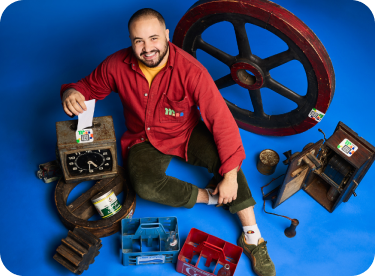
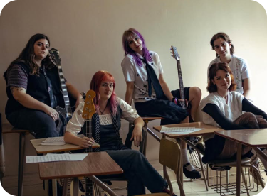
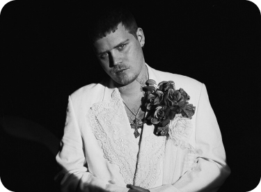
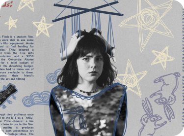
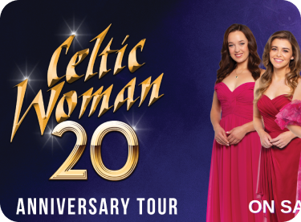

2025
Forget The Box
ProjetMILL: Bridging Industrial History and Community Engagement
2025
Also Cool Magazine
Twelve Vacancies 2025: The Festival that Made it Out of the Group Chat

2024
Also Cool Magazine
Dive into the World of Poolgirl

2024
Counterpoint Magazine
Beyond Cloud Rap: The Cross-Genre Range of Yung Lean

2024
Scatterbrain Magazine
Guinea Pig Funerals and Dreamy Folk Ballads: The Artistic Mastery of Marontate

2024
Counterpoint Magazine
Celtic Woman: 20 years of Cultivating Irish Pride Through Music
2024
Harf Journal of South Asian Studies, McGill University
Refuting Nationalistic Myths: The Trauma of Partition on Bengal Through the Meghe Dhaka Tara (1960) Soundtrack
2023
Scatterbrain Magazine
Interview: Bella Mazzola from Emerson Hill
2023
Scatterbrain Magazine
Breaking News! Rufus Cesspool Has Been Shot!
2023
Counterpoint Magazine
Death Grips is Online Once Again: Death Grips Concert Review
2023
Counterpoint Magazine
From Yoshi City to Montreal: Yung Lean Concert Review